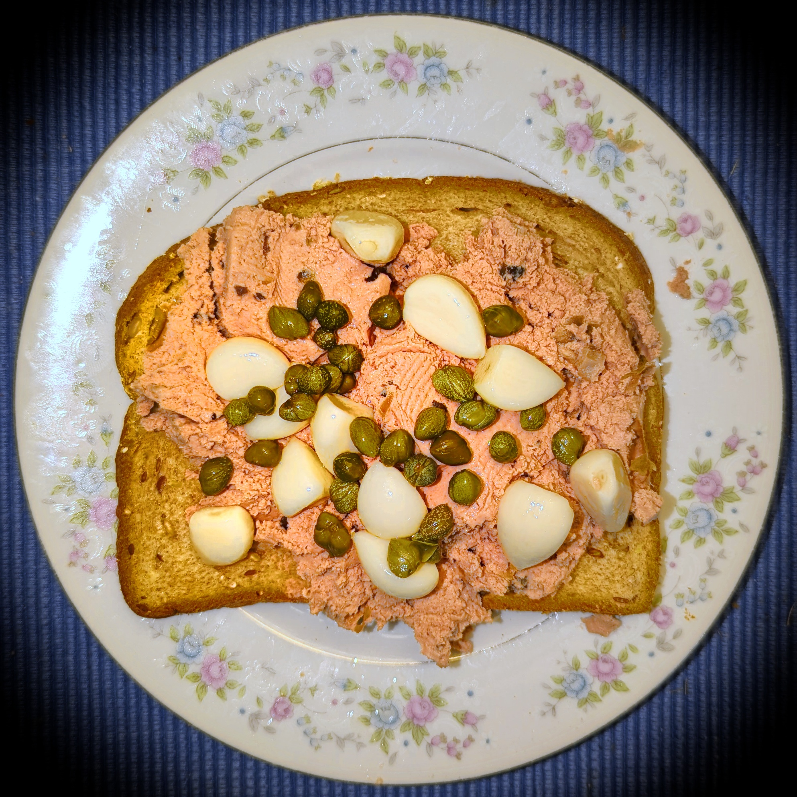

柏駅から少し歩いた路地の奥、灯りを頼りに扉を開けると、「ちっちゃな」という屋号のとおり、こぢんまりとした店内が迎えてくれます。決して広くはないお店ですが、その分ひとつひとつの席に目が行き届き、静かに落ち着いて過ごせる時間が流れています。
ある寒い日には、「寒くないですか」と奥様からブランケットの声をかけていただいたお客様もいらっしゃいました。派手なおもてなしではなく、こうした何気ない気配りこそが、このお店らしさだと思っています。
おひとりで静かに過ごす夜も、記念日を祝うふたりの時間も、子連れでゆっくり食事を楽しむご家族も。それぞれのペースで過ごせる店でありたいと考えています。
柏駅からは少し歩きますが、「見つけてよかった」と言っていただけるお店を目指しています。